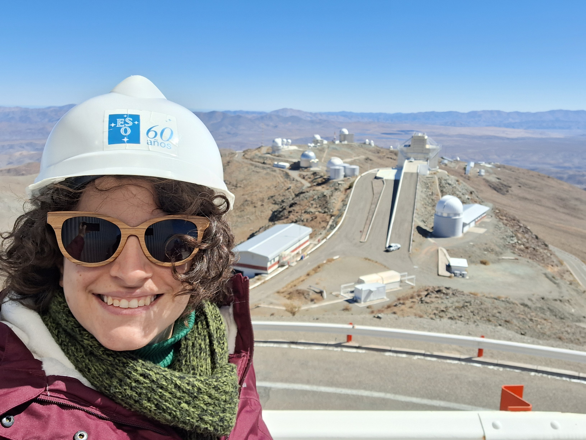

Astrophysicist & Science Communicator Astrofísica e Divulgadora Científica
I am a Brazilian astrophysicist finishing my PhD at the Max Planck Institute for Extraterrestrial Physics (Germany), researching supermassive black holes and their host galaxies. Alongside my research, I have spent over seven years designing and leading science communication and education programmes, reaching thousands of students across Brazil and Germany, and engaging with national and international media.
I am now redirecting my career towards science education and outreach centered on Indigenous astronomy in Brazil — valuing and sharing traditional knowledge of the sky alongside contemporary astrophysics, and building bridges between academia, schools, and Indigenous communities.
Sou uma astrofísica brasileira, concluindo o doutorado no Instituto Max Planck de Física Extraterrestre (Alemanha), pesquisando buracos negros supermassivos e suas galáxias hospedeiras. Paralelamente à pesquisa, dediquei mais de sete anos ao planejamento e à condução de programas de divulgação científica e educação, alcançando milhares de estudantes no Brasil e na Alemanha, além de atuar com a mídia nacional e internacional.
Atualmente, estou redirecionando minha carreira para a educação e divulgação científica voltadas à astronomia indígena no Brasil — valorizando e compartilhando os saberes tradicionais sobre o céu ao lado da astrofísica contemporânea, e construindo pontes entre a academia, escolas e comunidades indígenas.
Max Planck Institute for Extraterrestrial Physics (MPE), Germany
Advised byOrientação de Andrea Merloni & Kirpal Nandra
"Spectroscopic follow-up of the eROSITA all-sky X-ray survey: AGN feedback in connection with the growing large-scale structure"
University of São Paulo (IAG-USP), Brazil
Advised byOrientação de João Steiner, Claudia Mendes de Oliveira & Roderik Overzier
Best Thesis Award, Department of Astronomy (2021) Prêmio de melhor dissertação do Departamento de Astronomia (2021)
University of São Paulo (IFUSP), Brazil
Undergraduate research advised byIniciação científica com orientação de João Steiner
| 2026 | Olhar Digital (live) | Live for the month of women and girls in scienceLive sobre o mês das mulheres e meninas na ciência |
| 2026 | GeoLog (EGU Blog) | Article on the 40 years of the Challenger missionArtigo sobre os 40 anos da missão Challenger |
| 2026 | Volkssternwarte München (Public Observatory), DE | "Supermassive black holes: What we know, what we don't know yet, and what we'll never know" |
| 2025 | ESO Kosmisches Kino — ESO Supernova, Garching, DE | "Supermassive black holes: what we know, what we don't know yet, and what we will never know" |
| 2022–2026 | MPE Girls' Day — Garching, DE | Talk about the High Energy Group and career conversation (12–16 y/o)Palestra sobre o grupo de altas energias e conversa sobre carreira (12-16 anos) |
| 2023 | 15x4 München — Munich, DE | "Journey to supermassive black holes" |
| 2022 | Escola Vera Cruz, BR | "Constelações: um olhar científico" — event opening for parents and students (7–14)abertura de evento para pais e estudantes (7-14 anos) |
| 2022 | Escola Móbile, BR | "JWST: The space telescope that will launch a new era in astronomy" (14–17 y/o) |
| 2022 | Escola Vera Cruz, BR | Preparation for the Brazilian Astronomy Olympiad (14–17 y/o)Preparação para a Olimpíada Brasileira de Astronomia (14-17 anos) |
| 2022 | EMEF Pedro Fukuyei Yamaguchi Ferreira, BR | Introducing Astronomy (9–10 y/o)Introdução à Astronomia (9-10 anos) |
| 2022 | Colégio Rainha da Paz, BR | Astronomy Festival — talk on the field, career, and JWSTFestival de Astronomia — palestra sobre a área, carreira e JWST |
| 2022 | Colégio Santa Cruz, BR | Galileo Project — talk about JWSTProjeto Galileu — palestra sobre o JWST |
| 2022 | Astronomia na Montanha — Ashram Vila Govinda, BR | Talks and sky observation with amateur telescopesPalestras e observação do céu com telescópios amadores |
| 2022 | TUIMP: The Universe In My Pocket | Translation to PortugueseTradução para o português |
| 2021 | Colégio Santa Cruz, BR | Podcast interview about black holesEntrevista em podcast sobre buracos negros |
| 2021 | Escola Pinheiro, BR | "Young Scientist – Astronomy" (14–15 y/o) |
| 2021 | Camino School, BR | "Traveling to Mars?" (11–12 y/o) |
| 2021 | Colégio São Domingos, BR | Professional trajectories — career conversation (14–15 y/o)Trajetórias profissionais — conversa sobre carreira (14-15 anos) |
| 2020 | Colégio São Domingos, BR | Evaluation committee member, monograph on "The influence of the Moon in the female body" |
| 2020 | IAU Symposium 539 | Itinerant educational observatory — outreach activityObservatório educacional itinerante |
| 2018 | Instituto Butantan / Avistar Bird Fair, BR | "Seeing astronomical objects across the light spectrum" |
| 2015 & 2018 | Projeto Galileu — Colégio Santa Cruz, BR | Sky observation with amateur telescopes (13-14 y/o) |
Selected interviews and video appearances. I have been interviewed by CNN Brasil, Estadão, G1, TV Brasil, Globo News, Jornal Nacional, Folha de São Paulo, O Globo, Agência Brasil, and others — on topics ranging from the James Webb Space Telescope and black holes to my own research and women in science. Seleção de entrevistas e participações em vídeo. Já fui entrevistada pela CNN Brasil, Estadão, G1, TV Brasil, Globo News, Jornal Nacional, Folha de São Paulo, O Globo, Agência Brasil, entre outros — sobre temas que vão do telescópio James Webb e buracos negros até minha própria pesquisa e mulheres na ciência.
| 2024 | Selvagem – Ciclo de estudos sobre a vida | "Teia Cósmica" |
| 2023 | Astronomia ao meio-dia (IAG-USP) | "eROSITA: O Universo em altas energias" |
| 2023 | 15x4 München | "A Journey to Supermassive Black Holes" |
| 2022 | Astronomia ao meio-dia (IAG-USP) | "JWST: A era de ouro da astronomia" |
| 2022 | Practice UFFS Lives | "JWST: A era de ouro da astronomia" |
| 2020 | Coffee with Chemistry (UEPG) | "A representatividade feminina na ciência" |
| 2020 | Instagram (IGTV) | "Encontro com a cientista" — interview andentrevista e conversation with a 12-year-old girlconversa com uma menina de 12 anos |
| 2020 | IAG Science Day (USP) | "Classification of galactic nuclei" — Honorable mention, Best Ongoing Master's PresentationMenção honrosa, melhor apresentação de mestrado em andamento |
| 2020 | University of São Paulo | "Debate: A Ciência é Racializada?" — organizer & chairorganização e mediação |